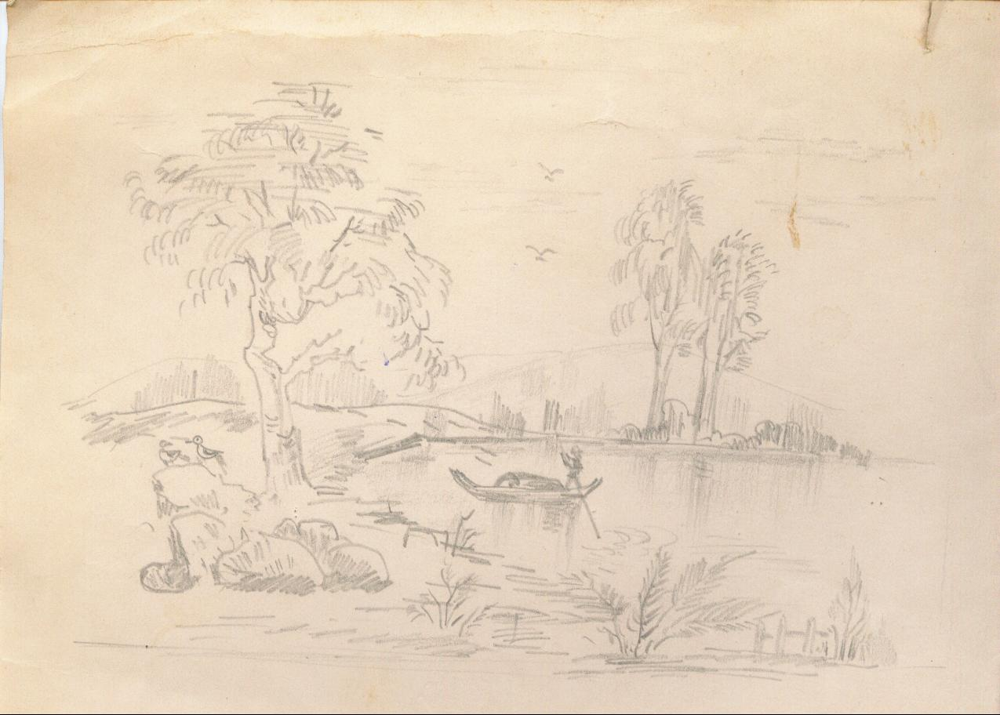
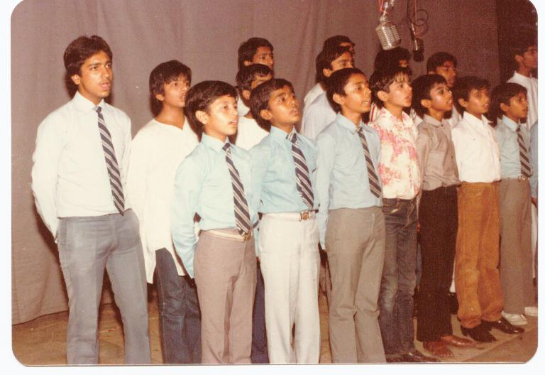

The above was our school anthem at St. Mary's Academy, Meerut Cantonment — sung every day from 1975 until 1988. St. Mary's was a wonderful period complete with all its challenges and adventures. My thirteen years in school saw me grow from a shy little boy, who needed suspenders until the third grade, to well, a shy not-so-little boy who would leave St. Mary's as just another one of her hundred boys that would not become a public charge.
School Anthem · St. Mary's Academy
"The school of St. Mary's, our hope and our pride,
Where from the bright morning to calm eventide,
In work ever earnest and keen happy play,
We grow mind and muscle, more manly each day.
REFRAIN: "The School of St. Mary's,
Ah! Hear it is calling,
The young lives, the true lives,
The brave and the free,
With comrades beloved and courage ne'er failing,
Fair school days shall roll on, roll on,
For you and me.
"The porch of St. Mary's is ................./
Is the porch to our lives that will ever be true,
Though far away in the world our footsteps may roam,
To God and our country, our school and our home.
REFRAIN

I was a rather weird little boy who made no use of the extensive sports facilities of my school but did make as much good as possible of the school's excellent but less spectacular library and computing facilities. I was a regular contributor to our school magazine, The Marian Lookout, but never became a writer or an editor in real life. I sang in the school choir from 1980 until 1986 but no one who met me for the first time after my St. Mary's days would believe, even in the state of utmost inebriation, that I could sing a note that was not off key.
To most of my fellow students, I was the ugly duckling — not fit for their company. Nevertheless, I had friends who stuck to me through the years, specifically three of them. I also had my guardian angels in some of my teachers, who heavily influenced me into becoming what I am today. Foremost among them was the late Mrs. Winnie G. Sada, our English and history teacher, who instilled in all her students an inherent curiosity for the past and the art of discovering the direction of the future from it. Also, there was the late Reverend Brother Aloysius, who taught us from his own life and actions that it did not take just strictness and regimentation to implement discipline and regard — sometimes a little love and mutual respect works just fine.

I lost touch with my Marian friends over the years as they, like me, moved away from Meerut. My visits back home did not coincide with theirs, and my only Marian connection was the occasional visit to some of my teachers at school. All that changed in November 2000, when I chanced upon my friend Nisheeth Srivastava's email address. That led to a spate of reunions with my other two friends who were also in the United States all this time.
My friend for the longest period of time, and the one who has suffered more abuse from me than any other, Lakshmi — besides his many talents — is also an excellent writer. There is a link on this page in memory of the writer who instead became a computer scientist.
Originally written May 2005 · Restored 2026